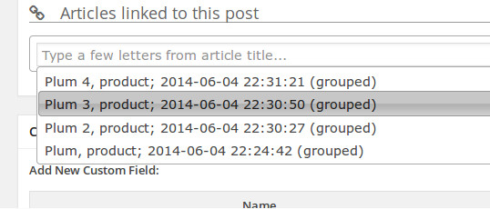
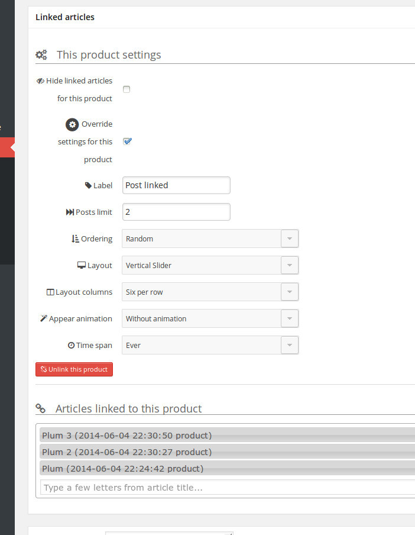
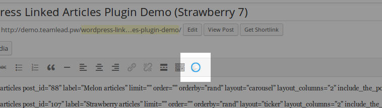
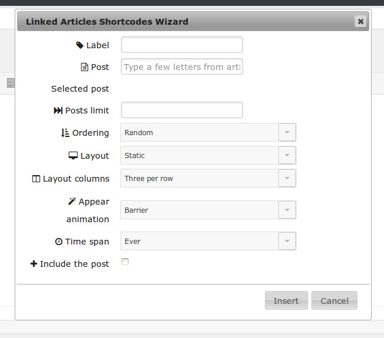

First of all you need to turn on Automatic Mode in the plugins settings.
You can find WordPress Linked Articles Plugin settings on the page http://yoursite.com/wp-admin/options-general.php?page=wp-linked-articles

Check the setting and click Save button. Let's use it now.
For Awesome Blog
Ok, you already have a lot of cool posts about fitness for example. It's time to show most relevant posts for them.
Open post editing page of one of the fitness posts, which you want to link among themselves. This is no matter which post of the whole set do you open.
On the post editing page find the Linked Articles adding widget

You don't have any linked articles yet. It's time to add them!
Type the part of the title of the post, which you want to add. Found posts were shown as a dropdown.
Navigate list by the keyboard or select by mouse. Selected article will be linked after post saving. Pick as more articles as you need. Remove articles, which are not needed anymore, by clicking X to the right of the titles.

For Great Shop
Ok, you have a WooCommerce shop and a lot of cool digital products for example. And you want to add Similar products section to the products page.
The process is similar to adding linked posts.
After adding linked products return to the Linked Articles adding widget on the post editing page.
Check the box Override settings for this product. The available settings will expand.

Change the label to the Similar products. Explanation of other settings you can find in the Advanced Usage section.
For Perfect Pages
Ok, you have the cool page about surfing for example. And you also have some posts about beaches and surfboards. let's assume, that you have already link some of them.
Open editing page of your Surfing page, navigate page contents and fine the best place, maybe the place where you mentioned beaches, where you surf.
Place cursor there and click the button of the Editor Linked Articles Shortcodes Wizard

Shortcode wizard popup will be opened. Search the post title of the linked posts in the Post field and then click Insert - linked articles shortcode will be placed.

You can place another shortcode for surfboards in different place of page content.
Save the page and preview your Perfect Page.
What next?
Check Set Up section to know more about plugin global settings.
Check Advanced Usage section to know more how to use the plugin in your theme or extend some of plugin's parts.